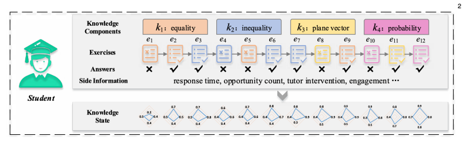
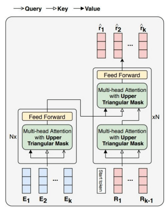

We've all been there as a student: stuck on a problem with no idea as to what you are missing. Luckily, there are teachers, tutors, and mentors to help us out. However, as the world moves and expands education to the world digitally, there are less and less available resources for students learning in this new medium. It's always nice that accessibility is being improved, but that doesn't ensure quality of education alongside with it.
In this research project, François, Hyunsun (Heidi), and I explore the foundations towards solving this problem of quality control. We wanted to work on a specific task called knowledge tracing: an idea where we try to track what a student does and doesn't know. We further this information in the knowledge-state by using it to predict correctness on questions and use this feedback to build and tweak the knowledge-state in relation to the given questions. We cycle through mass amounts of data to build our belief about what contributes to success which leads to a system which is able to predict student success, using interpretability analysis to describe why our model believes its prediction is correct.
In short, our model is based on another one called SAINT, and took in over one hundred million data points from a Korean language learner dataset originating from EdNet. We preprocessed it and trained our model using this data. The model uses a long short-term memory based recurrent neural network for the middle portion, with transformers on both sides to encode/decode the data for proper sequence analysis. We added some additional handcrafted features to further explore relationships within student knowledge.
During our development process, we ran into a lot of difficulties. One being the sheer size of handling this much data on our own machines as it was a lot to fit into memory. We had tried several times to run the training on AWS, but there were so many complications we decided to scrap AWS altogether. Another issue was the timeline put into place as this project was essentially to be produced over two months. We had to iterate quickly as final runs for model performance took up an excessive amount due to the size of our data. Overall, though, we stuck through it as a team, which I am proud of. I definitely could not have accomplished a project of this scale without my teammates. Much love to you both, François and Heidi!
Ultimately, we saw some minor improvements in our approach from the baseline. It was overall an interesting project and experience. Here's the highlights of what we applied:
This project is currently not for public availability or use. I've included a picture of our model outline below, though.
